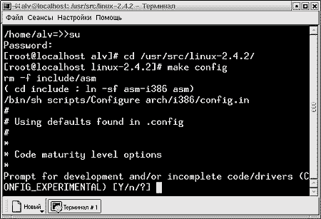
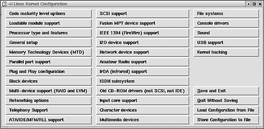
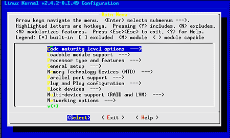

О компиляции ядра
Linux написано много. Очень много.
[Алексей
Федорчук ]
О компиляции ядра Linux написано много. Очень
много. Зачастую при путешествии по линуксовым сайтам даже
создается впечатление, что в ней, родимой, и заключена цель
установки оной системы. Впрочем, для дистрибутивов 5-6-летней
давности это действительно было необходимостью: их ядра, по
умолчанию рассчитанные на некие усредненные конфигурации, с
одной стороны, отягощали машины, не отличавшиеся еще
избыточной мощностью, с другойне поддерживали многих
считавшихся роскошью устройств.
Ныне большинство дистрибутивов
устанавливается с ядрами, обеспечивающими работу всех обычных
(а иногда и экзотических) устройств. В результате пользователь
сразу по инсталляции получает в свое распоряжение систему,
пригодную к употреблению если не на сто, то на девяносто
процентов.
Конечно, за все приходится платить. В том
числе и тем, что ядра (как и сами дистрибутивы, к слову будь
сказано) разбухают, включая в себя поддержку массы устройств,
у среднестатистического индивидуального пользователя обычно
отсутствующих. Что, как пугают знатоки, чревато снижением и
устойчивости, и быстродействия.
Относительно устойчивостивопрос спорный: все
же разработчики дистрибутивов (заслуживающих этого имени) свою
продукцию тестируют, и вряд ли выпустят что-либо заведомо
нестабильное или конфликтное.
А касаемо быстродействияспорить трудно. Но
мощь современных среднестатистических машин такова, что на
настольных приложения пользователь этого, скорее всего, не
ощутит, равно как и настоятельной необходимости в пересборке
ядра.
Тем не менее подчас к этой процедуре
прибегать приходится. Причиныкакое-либо экзотическое
оборудование, потребность в обмене данными с чуждыми файловыми
системами, upgrade аппаратуры, и еще тысячи; не последние из
нихлюбопытство и тяга к самообразованию. Так что я рискну
обратиться к этой набившей оскомину теме, изложив свои о ней
представления.
Процесс переустановки ядра распадается на три
стадииустановка исходников, конфигурирование и собственно
компиляция и установка. О первой и последней говорить не буду
за их тривиальностью и документированностью. Под
конфигурированием же ядра понимается включение или, напротив,
отключение поддержки всякого рода устройств, файловых систем и
прочего, для чего в Linux предусмотрено три средства,
основанных на стандартной программе make.
Первое средствоmake config, мрачноватая
текстовая утилита, задающая в интерактивном режиме множество
вопросов (рис. 1), смысл которых, IMHO, далеко не всегда
кристально ясен. Правда, ответив вопросом (?) на вопрос, можно
получить некоторый комментарий по поводу данной опции. Однако
лучше, прежде чем приступать к конфигурированию, обзавестись
какой-нибудь литературой по этому вопросу.

Рис. 1. Конфигурирование ядра с помощью make
config
Главным недостатком make config считается
невозможность внести изменения в течении текущей сессии. Любая
ошибка при ответах на вопросы требует останова программы и
начала процесса заново. Я отметил бы еще невозможность
ознакомиться сразу со всем списком связанных между собой
опций: они возникают перед глазами, как бог из машины.
На другом полюсесредство под именем make
xconfig. Это, напротив, графическая оболочка, запускаемая из X
Window. Здесь группы вопросов о конфигурации оформлены в виде
кнопок, нажатие на которые вызывает панели с дополнительными
вопросами (рис. 2). Работать с ней, вероятно, удобнее, но
графический режим может показаться нежелательным в столь
тонком вопросе.

Рис. 2. Конфигурирование ядра с помощью make
xconfig
И потому, как мне кажется, целесообразнее
прибегнуть к промежуточному вариантусредству make menuconfig,
где дело происходит посредством оформленного псевдографикой
меню. Есть возможность вернуться к уже пройденным группам
вопросов и внести коррективы, а главноеодним взглядом окинуть
весь круг родственных вопросов, что бывает не лишним.

Рис. 3. Конфигурирование с помощью make
menuconfig
Кроме того, у меня есть глубокое подозрение,
что есть и четвертое средствопрямое редактирование
конфигурационного файла (благо, это просто текстовый файл),
что и принято во FreeBSD. Но, как говорил Ходжа Насреддин,
подозрение не есть уверенность тем более, что среди имеющихся
штатных средств можно подобрать подходящее видом и нравом.
Более интересным видится мне вопрос о
стратегии конфигурирования. Все рекомендации по этому поводу
можно свести к двум тезисам. Первыйво всех сомнительных или
неясных случаях избирать вариант, предложенный по умолчанию
( если не знаешь, что делатьделай, что приказано Олег
Куваев).
Второй тезисвключать поддержку не только тех
устройств, которые есть, но и тех, которые, возможно, будут
установлены в будущем, дабы после этого не заниматься
переконфигурированием ядра заново.
Вероятно, оба тезиса имею под собой
основания, но мне кажутся не вполне оправданными. Первыйв
гносеологическом аспекте: если доверять, не проверяя,
умолчаниям, непонятные опции так и останутся непонятными.
Второй же тезис не оправдан технологически: ведь повышение
быстродействия системыодна из целей перегенерации ядра, не
правда ли?
Я, напротив, предложил бы (при наличии толики
времени и любопытства) иной подходбезжалостное исключение
поддержки всех отсутствующих устройств и всех непонятных
опций. Ведь, с большой долей вероятности, они потому и
непонятны, что отвечают за устройства, которых нет, которые не
нужны или не используются.
Первое, что может грозить в этом случаеядро
откажется компилироваться, или при сборке модулей последует
сообщение об ошибке. И то, и другое не страшновнимательно
читая выводимое на экран, причину сбоя можно локализовать.
После чего можно вернуться к конфигурированию и внести
соответствующие коррективы.
Вторая потенциальная опасностьядро откажется
загружаться. Что также не смертельноесли предварительно
озаботиться копированием предыдущего, заведомо
работоспособного, ядра или должным образом настроить начальный
загрузчик.
Впрочем, все указанные риски можно свести к
минимуму, если воспользоваться конфигурационными файлами,
следующими с исходниками как образцы. К большинству
дистрибутивов прилагается достаточно широкий их выбори для
различных процессоров (от абстрактного i386 до Pentium-4 и
Athlon), и разной степени продвинутости с точки зрения
полноты опций.
Разумеется, все они избыточны применительно к
реальным ситуациям. Но, выбрав наиболее подходящий случаю,
можно начинать плавное приближение к идеалу, для начала
отключив опции заведомо ненужные, затем, ненужные с большой
долей вероятности, и под конецненужными кажущиеся, параллельно
подключая то, что кажется жизненно необходимым.
Главное в этом делесоблюдать
последовательность и методичность. Многие опции, причем
рассеянный по разным основным группам, взаимно связаны между
собой, и отключение одной может вызвать неработоспособность
прочих. Так, к примеру, для возможности записи на IDE-приводах
CD-R/RW требуется:
- включение эмуляции SCSI через IDE-интерфейс, что
делается в разделе конфигурирования устройств IDE;
- включение поддержки протокола SCSI в соответствующем
разделе;
- включение в нем же общего SCSI-драйвера (т.н. Generic
SCSI).
Причем, что характерно, не требуется ни
поддержка конкретных SCSI-устройств, ни подключение каких-либо
низкоуровневых SCSI-драйверов.
Так что, взявшись за это дело всерьез,
следует последовательно отрабатывать (на заведомо
работоспособном ядре) все связанные группы опций. Конечно,
перекомпиляция требует времени, но на современных машинах это
уже не часы, а минуты, так что асимптотическое приближение к
идеалу себя оправдывает.
[Источник
Computerra
Online]
[Опубликовано 23.08.2001]
[ опубликовано 01/08/2002
]